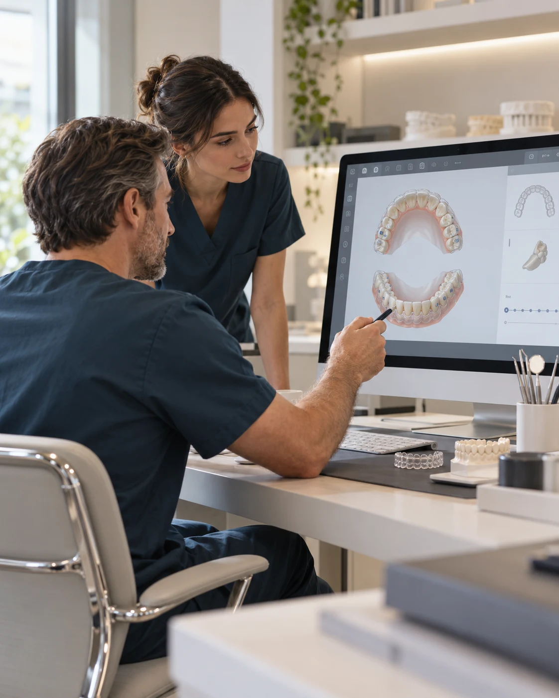
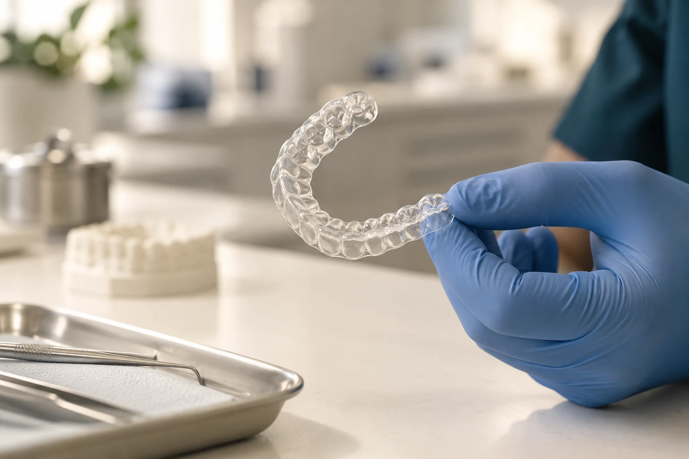
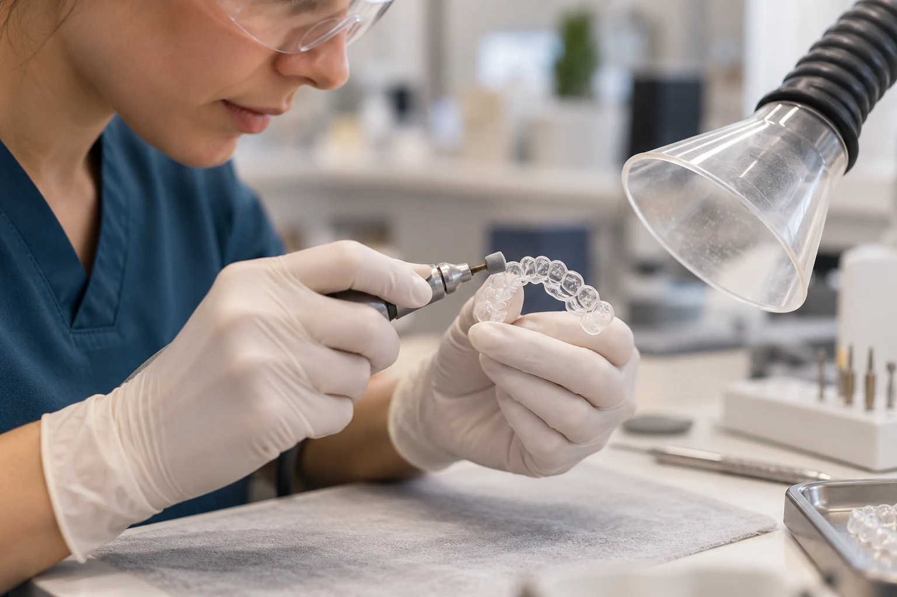
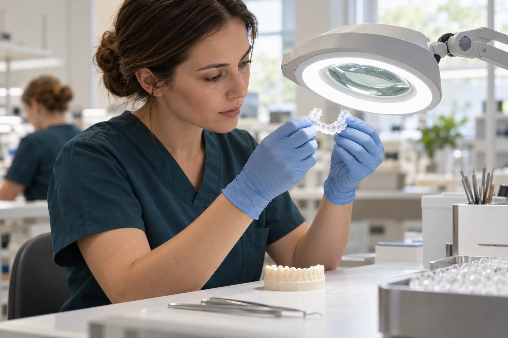

Préparer le dossier
Réunir les données nécessaires et les objectifs du praticien pour construire une proposition adaptée au cas.
Derrière votre marque, une chaîne de travail qui relie l’expertise orthodontique, le choix du matériau et le geste du technicien.
Blanche accompagne votre cabinet dans la préparation des plans de traitement et la fourniture d’aligneurs sur mesure. À Aix-en-Provence, la planification et la production s’inscrivent dans un même parcours, avec des échanges entre les équipes et le praticien.
Découvrir la conception ↓
Un aligneur prend son sens dans une séquence de traitement. À partir du dossier transmis par votre cabinet, le travail de planification prépare les étapes et les mouvements envisagés.
L’appui d’un orthodontiste permet de discuter du projet, de ses limites et des ajustements à envisager. Vous confrontez la proposition à votre examen clinique avant de valider le plan et d’engager la suite du parcours.
Réunir les données nécessaires et les objectifs du praticien pour construire une proposition adaptée au cas.
Discuter du plan numérique avec l’appui orthodontique, puis intégrer les demandes de modification.
Le praticien traitant conserve le diagnostic, la prescription et la validation clinique du projet.

Nous utilisons un polymère médical à trois couches pour la fabrication des aligneurs. Le matériau fait partie du dispositif, au même titre que sa géométrie, sa mise en forme et sa finition.
Ce choix s’inscrit dans une conception d’ensemble : le plan définit la séquence et la fabrication traduit les étapes validées en dispositifs destinés au patient.
La référence du matériau, son épaisseur et ses caractéristiques documentées relèvent de la documentation technique applicable. Cette présentation n’attribue pas de supériorité clinique au seul nombre de couches.
Une production qui associe le dossier numérique au travail de fabrication, puis à l’attention portée aux contours du dispositif.

La production suit le plan validé et les étapes prévues pour le dossier. Le lien entre le cas, la séquence et les aligneurs guide l’organisation du travail.
Le travail manuel porte notamment sur les bords du dispositif. Le technicien reprend la finition et examine les zones qui demandent une attention particulière.
L’aligneur passe ensuite à l’inspection, avant son conditionnement et son envoi au cabinet.
L’inspection complète le travail de fabrication. Elle porte sur l’aspect du dispositif et l’attention donnée à sa finition, en lien avec le dossier de production.
Les contrôles de production complètent, sans remplacer, l’évaluation clinique et la vérification du dispositif par le praticien lors de sa remise au patient.

Le suivi des commandes relie les étapes de préparation, de production et d’expédition. Les modalités de traçabilité et les informations accessibles au cabinet se définissent lors de la mise en place de votre offre.
Dossier et plan validé
Fabrication et finition
Inspection et conditionnement
Expédition vers votre cabinet
Parlons de votre pratique, de vos attentes produit et du cadre d’accompagnement adapté à votre cabinet.
Préparer mon échange avec Blanche ↗